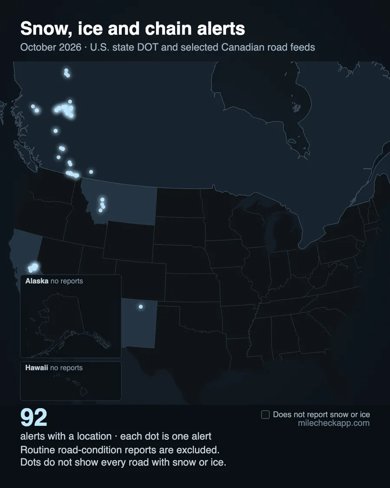
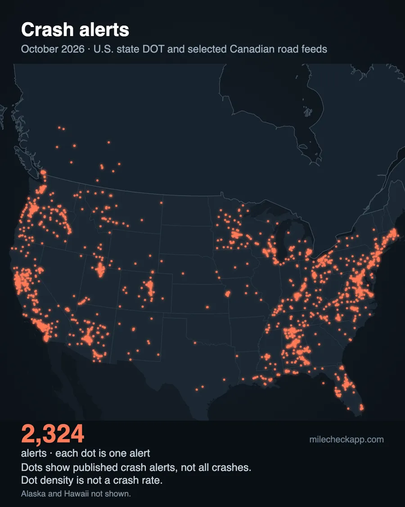
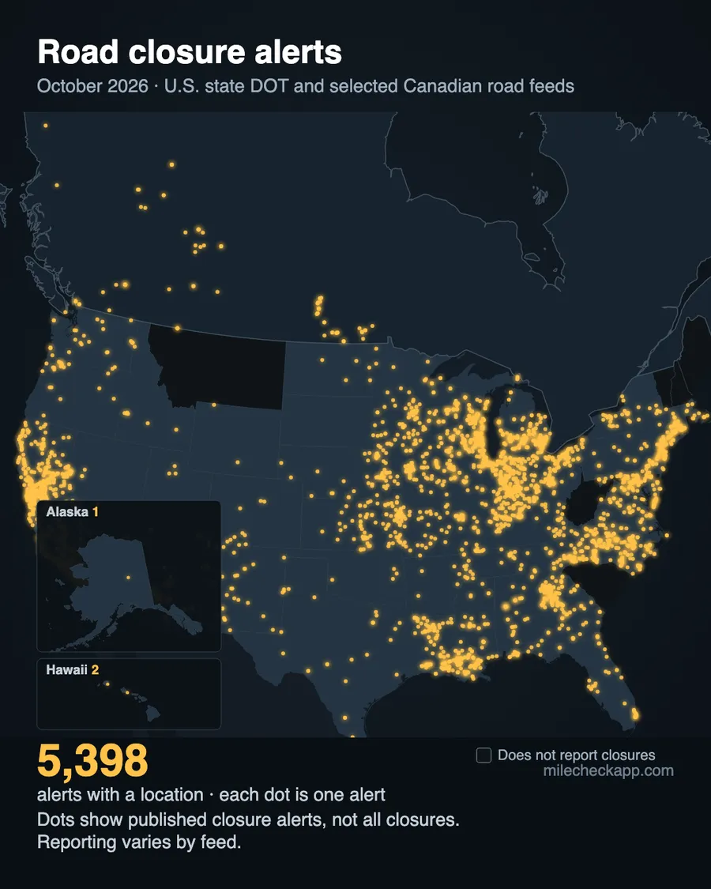

MileCheck Highway Report
MileCheck Highway Report, October 2026
What road feeds published in October 2026 across all 50 US states, British Columbia, Alberta and Manitoba. The report also covers border waits, Seattle drawbridge openings and wildfire records, from separate sources.
✉ Get the MileCheck Highway Report by email, once a month →
The month on a map
Each dot is one alert a feed posted in October. Blank areas can mean a feed does not post that kind of alert, so these maps show where alerts were posted, not every crash or closure.



Crashes
Road feeds posted 2,329 crash alerts in October. 43 of the 53 feeds post crashes at all, and each agency decides which crashes go on its feed. Your state's page shows which routes had the most.
Closures and roadwork
Road feeds posted 5,369 closure alerts and 23,886 roadwork alerts in October. Your state's page shows which routes had the most.
New York: 511NY changed its data system at the end of September. MileCheck recorded 3,429 alerts in September and 590 in October. The drop reflects the feed change, so these counts do not show whether New York had fewer road incidents.
Border waits
Waits to enter the United States in standard passenger lanes, October, from hourly U.S. Customs and Border Protection readings. Averages use every valid hourly reading. Dates are local to each crossing.
- Eagle Pass / Bridge II (Texas) — 5 hr, October 13
- Otay Mesa (California) — 4 hr 40 min, October 26
- Tecate (California) — 4 hr 30 min, October 25
- San Luis / San Luis I (Arizona) — 4 hr 30 min, October 5
- San Ysidro (California) — 4 hr, October 25
- Brownsville / B&M (Texas) — 4 hr, October 17
- San Ysidro (California) — 1 hr 25 min average
- Otay Mesa (California) — 1 hr 19 min average
- Tecate (California) — 1 hr 4 min average
- Calexico / West (California) — 58 min average
- El Paso / Bridge of the Americas (BOTA) (Texas) — 51 min average
- Brownsville / B&M (Texas) — 49 min average
Live waits are at milecheckapp.com/borders.
Seattle drawbridges
Seattle's drawbridges opened 706 times in October.
- Fremont Bridge — 279 openings, typically 6 minutes, longest 13
- Ballard Bridge — 229 openings, typically 4 minutes, longest 30
- South Park Bridge — 86 openings, typically 6 minutes, longest 85
- Montlake Bridge — 74 openings, typically 5 minutes, longest 8
- 1st Ave S Bridge — 38 openings, typically 10 minutes, longest 19
Live status is on the drawbridge map.
Wildfires
The national wildfire feed (NIFC, plus the BC Wildfire Service) listed 226 fire records as of Oct. 31, 4 PM Pacific in the states and provinces we track, after prescribed burns were removed. 100 of them were under an acre. 44 were 1,000 acres or more, and 21 of those were not fully contained.
- Washington — Little Giant (Chelan County), 172,912 acres, 100% contained
- Oregon — Second Flat (Harney County), 105,854 acres, 100% contained
- Colorado — Aspen Acres (Custer County), 102,007 acres, 96% contained
- Oregon — Grasshopper (Wasco County), 93,972 acres, 98% contained
- Colorado — Ferris (Montezuma County), 64,881 acres, 100% contained
- Oregon — Hagen (Umatilla County), 61,380 acres, 99% contained
- Oregon — Wrights Spring (Klamath County), 55,134 acres, 100% contained
- Colorado — Gold Mountain (Ouray County), 39,747 acres, 92% contained
- Montana — Sand Creek (Beaverhead County), 35,520 acres, 100% contained
- Florida — National (Collier County), 35,027 acres, 100% contained
- New Mexico — Line (Quay County), 30,144 acres, 100% contained
- California — Timber (Monterey County), 25,350 acres, 97% contained
Thank you to the firefighters and crews who worked these fires all season.
Live fire perimeters and the closures near them are at milecheckapp.com/fire.
Winter closures
Some mountain roads close every winter. These states have them, and each state page lists the roads, their usual closing and reopening times, and the agency source. We update the list each month through winter.
✉ Get next month's report by email →
By state
Each state and province has its own page with the same measures.
- Alabama
- Alaska
- Alberta
- Arizona
- Arkansas
- British Columbia
- California
- Colorado
- Connecticut
- Delaware
- Florida
- Georgia
- Hawaii
- Idaho
- Illinois
- Indiana
- Iowa
- Kansas
- Kentucky
- Louisiana
- Maine
- Manitoba
- Maryland
- Massachusetts
- Michigan
- Minnesota
- Mississippi
- Missouri
- Montana
- Nebraska
- Nevada
- New Hampshire
- New Jersey
- New Mexico
- New York
- North Carolina
- North Dakota
- Ohio
- Oklahoma
- Oregon
- Pennsylvania
- Rhode Island
- South Carolina
- South Dakota
- Tennessee
- Texas
- Utah
- Vermont
- Virginia
- Washington
- West Virginia
- Wisconsin
- Wyoming
What's new at MileCheck
In the app
- iPhone version 1.10.44 and Android version 1.10.40 are in the stores.
Cameras
- Camera pages and maps now have a Map options menu with closure and wildfire layers and weather radar.
- Crystal Mountain's summit camera and the Paradise camera at Mount Rainier are on the map.
Roads and closures
- A snowplow map for 14 US states and 3 Canadian provinces, with each truck's last reported spot.
- A map of 20,031 open public railroad crossings at road level on state highway systems, from FRA records.
- A cell coverage map for highways in WA, OR, ID, MT, NV, WY and UT, from carrier-reported FCC data.
- New pass pages for Coquihalla, Sea-to-Sky, Rogers Pass, Kootenay Pass, Wolf Creek, Monarch, Mt Hood, Santiam, White Pass and more.
- Pages for 63 ski areas, with the roads in, their cameras and the snow forecast.
- Late-November driving guides for I-5, I-40, I-70, I-80 and I-90, ahead of Thanksgiving.
- A current storms page, updated twice a day.
In other languages
For businesses
- One page for partners, with the same facts and prices on every business page.
- A free 14-day API test key, 100 calls a day. Live border waits are in the Business plan.
- Corridor board demos, starting with US 2 over Stevens Pass. Store installations have not started.
The live version is in the app.
MileCheck shows state DOT feeds for crashes, closures, and delays in all 50 states, British Columbia, Alberta and Manitoba as they are published, with your nearest mile marker, or kilometre marker in Canada.
App Store Google PlayBuilt from MileCheck's archive of state DOT road feeds. A new Highway Report comes out at the start of every month.